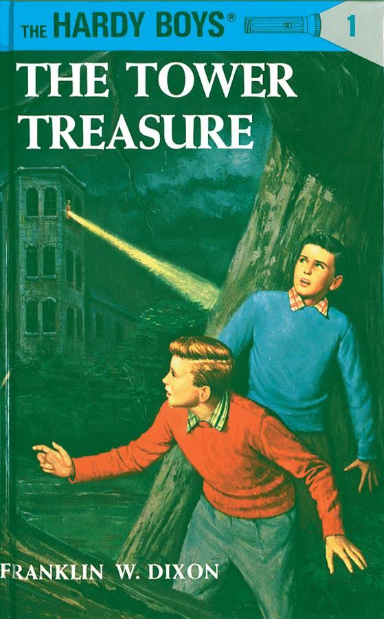
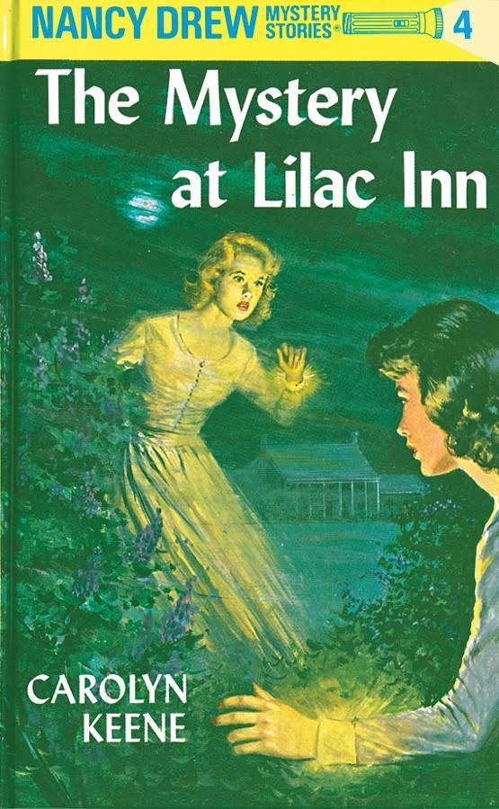
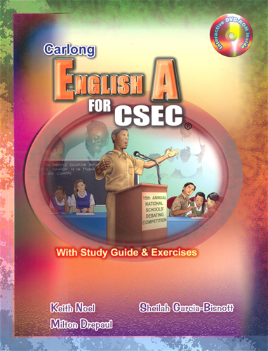
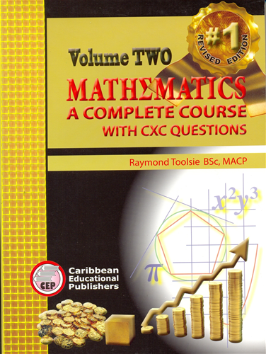
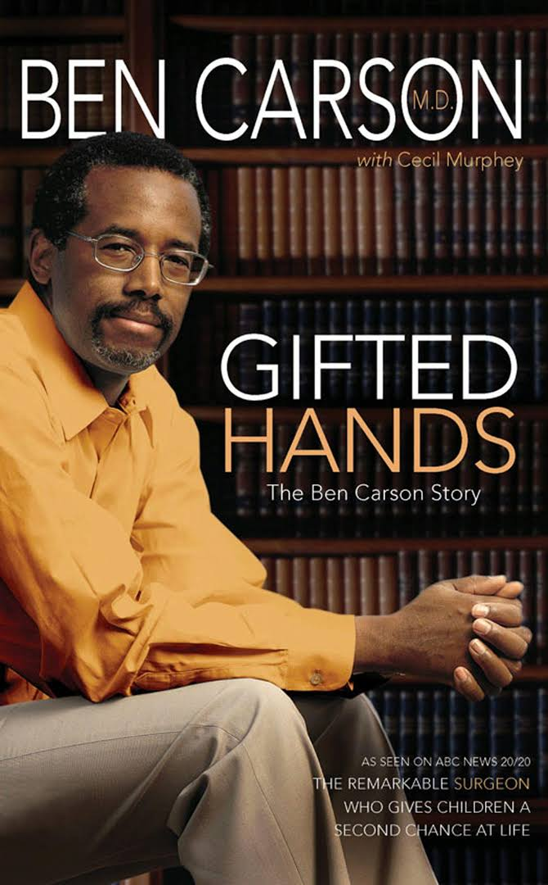
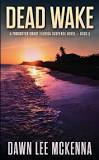
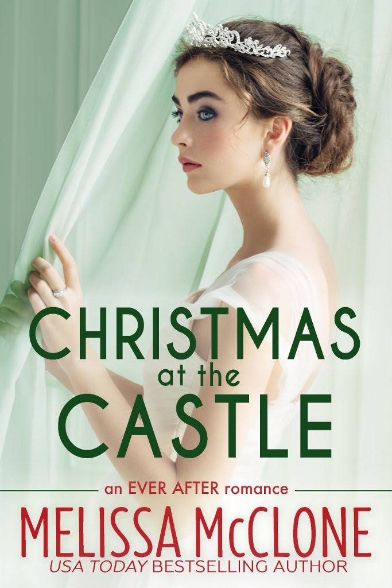

| ISBN | Picture | Title | Author | Publisher | Summary |
|---|---|---|---|---|---|
| 9780448089010 |  | The Hardy Boys: Tower Treasure | Franklin W. Dixon | Grosset & Dunlap | The story begins with Frank and Joe Hardy barely avoiding being hit by a speeding driver, who they notice has bright red hair. Later, this same red-haired driver attempts a ferry boat ticket office robbery and successfully steals a yellow jalopy called Queen from the Hardys' friend, Chet Morton. Due to one witness reporting that the villain had dark hair, the Hardys assume he is using a red wig. It is learned that the thief returned to Chet's home to steal a tire, helping Frank and Joe to find Queen abandoned in a public wooded area. |
| 9780448095042 |  | Nancy Drew: The Mystery at Lilac Inn | Carolyn Keene | Grosset & Dunlap | The story involves Nancy Drew helping her friend Emily Crandall find out who stole her heirloom jewels. Emily's aunt and guardian, Hazel Willoughby, unwisely removes them from a safe deposit box and carries them with her while lunching at Lilac Inn, only to have her handbag stolen while the diners are distracted. In the meantime, Nancy must hire a temporary maid in the absence of Mrs. Gruen, her housekeeper. Nancy uncovers the thief, Mary Mason, one of the applicants for the position of maid. She then tracks Mary Mason to a gang, which includes Mary's brother, Bud. Nancy is bound and gagged and left aboard the gang's sinking cabin cruiser to die, but is rescued by the river patrol. |
| 9789766380915 |  | Carlong English A for CSEC With Study Guide | Keith Noel & others | Carlong | It gives a detailed analysis of the requirements of the examination and the literary skills students need to perform well. Students are guided in the techniques of writing to give pleasure, to inform, or to persuade. The guide also discusses and demonstrates literary analysis of poems, drama and prose extracts. Worked examples take students through the process of answering specific questions. Every student preparing for the English A examination needs to have a copy. |
| 9789766481339 |  | A Complete Mathematics Course Vol 2 | Raymond Toolsie | Caribbean Educational Publishers |
|
| 9781480554382 |  | Ben Carson: Gifted Hands | Ben Carson | Zondervan Books | Gifted Hands by and about Ben Carson, M.D., is the inspiring story of an inner-city kid with poor grades and little motivation, who, at age thirty-three, became director of pediatric neurosurgery at Johns Hopkins University Hospital. Gifted Hands will transplace you into the operating room to witness surgeries that made headlines around the world, and into the private mind of a compassionate, God-fearing physician who lives to help others. |
| ISBN | Picture | Title | Author | Publisher | Summary | Download |
|---|---|---|---|---|---|---|
| 9780692613061 |  | Dead Wake | Dawn Lee Mckenna | Sweet Tea Press | When the local florists find a dead guy in their wall, it opens up a decades-old missing persons case. It also opens up a Pandora's box of secrets - secrets that might have ramifications for Sheriff's Office investigator Maggie Redmond. |
Download Dead Wake |
| 9781945879180 |  | Christmas at the Castle | Melissa McClone | Tule Publishing | A European getaway during the Christmas holiday is exactly what veterinarian Katrina “Kat” Parsons needs. She can’t wait to be a bridesmaid in her childhood friend’s royal wedding, but she hopes to steer clear of the bride’s arrogant older brother. | Download Christmas at the Castle |